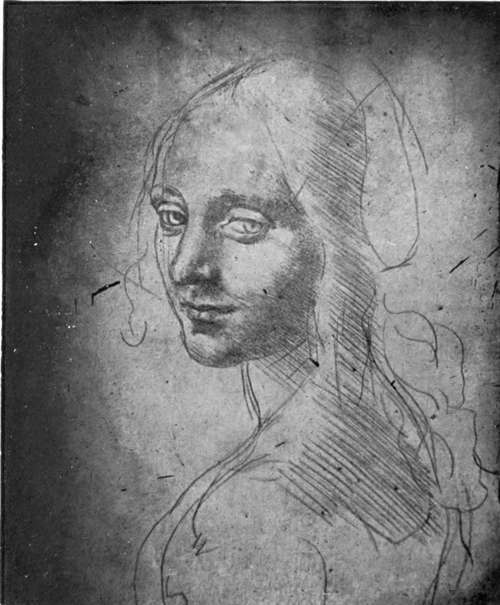
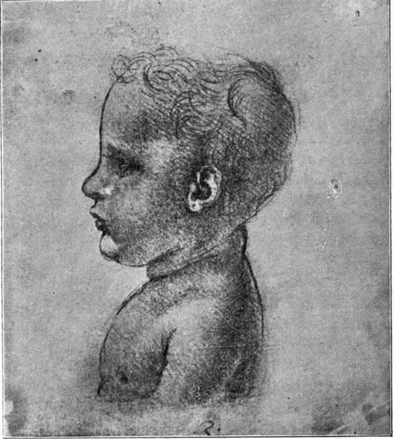

The Records, 1494-1519. Part 8
Description
This section is from the book "Leonardo Da Vinci", by Edward McCurdy. Also available from Amazon: Leonardo Da Vinci.
The Records, 1494-1519. Part 8
Within little more than twenty years from this date the walls of the Sala del Consiglio had been covered with frescoes by Vasari. It would appear that what remained of Leonardo's painting was destroyed to make way for them. Vasari's vivid description of the group adds one to the number of the combatants. He is silent as to its history in the much-revised second edition of 1568. although in the interval between the two editions the destruction had almost certainly taken place.
The letter to de Chaumont makes mention of two Madonna pictures, painted in Florence, which he intended to take back with him to Milan. One of these was probably the picture for which there is a study in the Louvre of the head of the Virgin.1 Copies exist in the Poldi Pezzoli Gallery at Milan and the Litta Madonna at the Hermitage.
Mr. H. P. Home has pointed out the existence of studies for the head, hand and foot of the child in reverse, in the British Museum MS.,* which, as the opening lines state was " begun in Florence in the house of Piero di Braccio Martelli on the 22nd day of March, 1508." This is very near to the presumed date of the letter to de Chaumont, which speaks of being back by Easter.
The King in his letter to the Signoria spoke of Leonardo as " our painter and engineer in ordinary." It is to his work in the latter capacity that evidence chiefly relates. He had been given by the King the right to take twelve inches of water from the canal at S. Cristoforo, but owing to the dearth of water in the canal the grant had not taken effect before his return to Florence. A letter to the President of the Commission for Canals, asking to be put in possession of his right, is of the same date as that to de Chaumont ending with a request for his influence in the matter of the water, " because on my return I hope to make there instruments and things which will be of great pleasure to our Most Christian King." The reference is apparently to some mechanism for regulating the flow of water.
1 Vallardi, 2376.
2 Arundel 263, folio 253 v. and 256 r.
Plate 18. Study For The Angel In The "Virgin Of The Rocks"
Philpot photo - Royal Library, Turin
A note, with diagram, in the MSS. of the Institut,1 of "the conduit in the garden of Blois made in France by Fra Giocondo," may be cited in this connection. The MS. is of date later than 1504. The wording of the note suggests that it was not written in France.
Louis XII. apparently consulted Leonardo as to the plan of irrigation of the royal chateau.
He was again occupied upon the construction of hydraulic works in Lombardy. In the MSS. of the Institut F, "commenced at Milan on the 12th day of September, 1508," is a note,2 " how to remedy the effect of the diminution of water in the Adda, caused by making theMartesana canal." To render the canal navigable from Milan to Como necessitated the cutting of a canal between Trezzo and Brivio, of six and a half miles with two locks. Notes and plans in section for this work are in the Codice Atlantico.3
On May 3rd, 1509, he records the completion of a reservoir which he had made in the canal of S. Cristoforo.
The triumphal entry of Louis XII. into Milan in July, 1509, after the victory of Agnadello, recalled him to more picturesque avocations. Then, probably, as part of the pageantry, he constructed the automatic lion which Vasari and Lomazzo tell of. There is a sketch of the creature on the same sheet as a chalk drawing for the right hand of the Louvre S. John}
1 R., 1073
2 Fol. 76 V.
3 R., 1012. C. A., 141 v.
Louis brought with him French artists and poets. Their verses rang with Leonardo's praise, Leonard qui a graces supernes.
It would seem that the Sforza days were born anew and that another hand had taken up Bellincioni's lyre.
His manuscripts show his intercourse with the French artists. We may cite the note in the Codice Atlantico, "get from Jean de Paris the method of painting in tempera, ..."2 which weakens the supposition that Leonardo never painted except in oils.
The fresco of the Madonnone in the Villa Melzi at Vaprio, traditionally ascribed to Leonardo and Francesco Melzi, but which Morelli and Dr. Frizzoni give to Sodoma, is certainly not the work of Leonardo, but the composition seems to me to suggest his immediate influence. A drawing of his first Florentine period might have been used for the Child, so strong the analogy to that in the Adoration. The standard fell away as the work proceeded. Possibly Melzi may have painted it under the eye of Leonardo during one of his frequent visits to Vaprio.
This was also the time of Leonardo's intercourse with Marc Antonio della Torre, Professor of Anatomy at Pavia. A note in the Windsor MSS.runs: "Thiswinter of 15 io I hope to finish all this anatomy."
1 C. A., 179 r.
2 C. A., 247 r.
Plate 19. Study For The Infant Christ In "The Virgin Of The Rocks"
New Gallery Portfolio - Royal Library, Windsor
In October, 1510, his name appears as one of a commission appointed to advise on the construction of the choir stalls in the cathedral. There was no great artistic work, but otherwise he seems to have taken up again almost the same threads of activity in this second period of residence at Milan. It ended by a turn of the wheel of political fortune. The French hold on Lombardy, weakened by the death of de Chaumont in March, 1511, ceased altogether on the death of Gaston de Foix at Ravenna in April, 1512, and in June Maximilian Sforza, supported by a coalition of Spain, the Pope and Venice, re-entered Milan.
Continue to:
Tags
leonardo da vinci, pictures, drawings, galleries, statues, da vinci